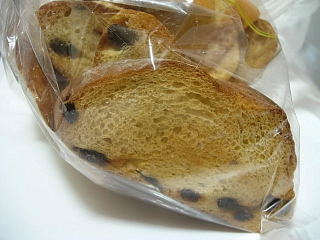
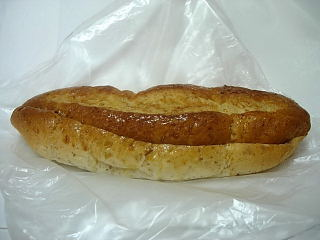
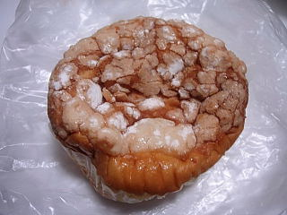
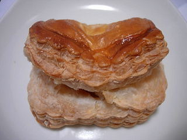

マルシンのミックスラスク
更新日 : 2009/3/15
数種類のパンが入っていて、色んな味が楽しめるラスクです。

パンの種類によって味や食感は違いますが、全体的にここのラスクはサクサクと柔らかく、食べやすかったです。スナック菓子みたいにパクパク食べれました。
レーズンパンのラスクってあまり見かけない商品ですが、なかなか美味しくて良かったです。
島根県松江市雑賀町96番地
更新日 : 2009/3/15
数種類のパンが入っていて、色んな味が楽しめるラスクです。

パンの種類によって味や食感は違いますが、全体的にここのラスクはサクサクと柔らかく、食べやすかったです。スナック菓子みたいにパクパク食べれました。
レーズンパンのラスクってあまり見かけない商品ですが、なかなか美味しくて良かったです。
更新日 : 2009/3/15
ちょっと香ばしくて味わい深いあんぱんでした。

あんが均等に入っているので、甘すぎず、食べやすかったです。パン自体の味も美味しかったです。
普通のあんぱんより好きかも。
更新日 : 2008/07/05
帰りの移動中にパンを潰しちゃってしまいました。本当は丸く膨らんでます。

ふんわりとしたメロンパンの中に、クリームが入った感じでした。
クリームは少な目でしたが、パン生地自体に味があったので、甘くなり過ぎずいいバランスで美味しかったです。
更新日 : 2008/04/26
しっかりと膨らんでてサクサクのアップルパイです。

こんなに膨らんでるのってなかなかないですよね。
油濃くなくて、甘すぎず、見た目も味も軽いアップルパイでした。膨らんでて大きいですけど、パクっといけました。
更新日 : 2007/10/27
ラグビーボールみたいな格好なのでラグビーって名前なんでしょうか？ちょっと大きめのパンです。
見た目はハード系のレーズンパンですが、バターが多いので食べてみると見た目よりずいぶん柔らかいです。バターが多いので、バター味がしっかりあって、ちょっとクロワッサンみたいな味がするレーズンパンでした。
レーズンとバターの組み合わせなので、無難に美味しかったです。おやつパンにしても、食事パンにしてもいい商品ですね。
更新日 : 2007/07/21
あんが沢山入ってて、ちょっと大判焼きみたいな食感でした。アンが多いんですが、味がキツくない甘さで、小豆のいい味がしっかりして美味しいです。さすが特選！って感じです。
餡が多いのでパンの味はそんなに気になりませんが、パン自体も美味しかったです。
いっしょにラスクを買ったんですが、柔らかいサクサク感がとても気に入りました。また行ったら絶対買います。